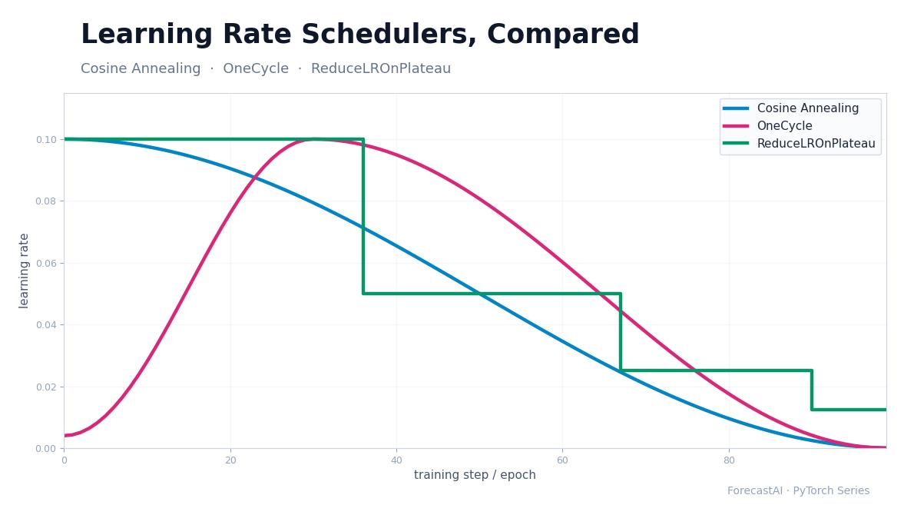
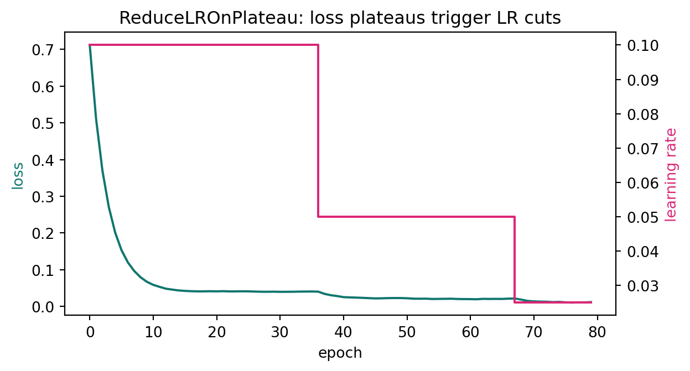

학습률 스케줄러 비교: Cosine Annealing vs OneCycle vs ReduceLROnPlateau
데이터과학
인공지능
PyTorch
최적화
학습률은 최적화에서 가장 중요한 단일 하이퍼파라미터이며, 이를 고정해 두는 것은 거의 언제나 타협입니다. PyTorch에서 가장 많이 쓰는 세 스케줄러(CosineAnnealingLR, OneCycleLR, ReduceLROnPlateau)를 정확한 공식으로부터 재구현해 수치로 검증하고, 각각이 학습 과정을 어떻게 다르게 빚어내는지 시각화한 뒤, 이 선택이 최종 손실을 실제로 바꾸는지 측정합니다.
저자
Prof. Shin
공개
2026-08-07

[개념 시각화] 세 스케줄러는 같은 학습 과정을 서로 다르게 빚어냅니다. 코사인은 0까지 부드럽게 감쇠하고, OneCycle은 워밍업 후 감쇠하며, ReduceLROnPlateau는 지표가 정체될 때마다 학습률을 계단식으로 잘라냅니다.
학습률은 매 최적화 스텝이 가중치를 얼마나 멀리 움직일지를 결정하며, 다른 어떤 하이퍼파라미터도 학습에 이만큼 직접적으로 영향을 주지 않습니다. 너무 크게 잡으면 손실이 발산하거나 나쁜 영역에서 요동치고, 너무 작게 잡으면 학습이 기어가듯 느려져 연산을 낭비하며 종종 더 나쁜 최소점에 안착합니다. 하나의 고정값은 서로 반대되는 두 요구를 동시에 감당해야 합니다. 가중치가 좋은 해에서 멀리 있어 거친 진전을 값싸게 얻을 수 있는 초반에는 큰 스텝이, 모델이 최소점 근처에서 미세 조정 중이라 큰 이동이 잡음만 더하는 후반에는 작은 스텝이 필요합니다. 학습률 스케줄은 학습이 진행되는 동안 학습률을 바꿔 이 긴장을 해소합니다. 이 글에서는 PyTorch에서 가장 먼저 손이 가는 세 스케줄러 CosineAnnealingLR, OneCycleLR, ReduceLROnPlateau를 각각의 정확한 공식으로부터 재구현해 동작 원리를 완전히 드러내고, 그 재구현이 PyTorch가 내는 값과 일치하는지 확인한 뒤, 소규모 학습 비교로 이 선택이 값을 하는지 살펴봅니다.
이 글의 실행 코드는 전부 NumPy만 사용하므로, 아래의 모든 수치는 라이브러리 호출 뒤에 숨지 않고 밑바탕 공식으로부터 재현됩니다. 실제 학습에서는 당연히 PyTorch 클래스를 그대로 쓰며, 그 내부는 정확히 이 공식들을 감싸고 있습니다.
모든 감쇠 스케줄의 직관은 동일합니다. 학습 초반에는 손실 표면이 가파르고 가중치가 최소점에서 멀기 때문에, 큰 학습률이 빠르고 값싼 진전을 만듭니다. 가중치가 좋은 영역에 가까워지면 미니배치 샘플링의 잡음 대비 유용한 그래디언트 신호가 작아지고, 이때의 큰 스텝은 안착하는 대신 넘어서고 흔들립니다. 학습률을 시간에 따라 줄이면 옵티마이저가 거친 이득을 먼저 취한 뒤 미세 조정 단계에서 조용해질 수 있습니다. 아래 세 스케줄러는 이 감소의 모양과 그것을 무엇이 이끄는가—고정된 시계인지, 미리 계획된 한 번의 사이클인지, 관측된 손실인지—에서만 차이가 납니다.
Cosine Annealing (코사인 어닐링)
SGDR의 일부로 제안된 코사인 어닐링(Loshchilov & Hutter, 2017)은 학습률을 코사인 곡선의 전반부를 따라 감쇠시킵니다. 기본 학습률에서 시작해 처음에는 천천히 떨어지고, 중반에서 가장 빠르게 하강하며, 최소값으로 부드럽게 들어갑니다. T_max 중 스텝 t에서 학습률은 다음과 같습니다.
중간 지점에서 학습률은 정확히 기본값의 절반이고, T_max에서 최소값(여기서는 0)에 도달합니다. 실무에서 코사인 어닐링은 손이 덜 가는 강력한 기본값입니다. 총 길이와 기본 학습률만 있으면 되고, 부드러운 곡선이 다양한 모델에서 잘 통합니다.
OneCycle
OneCycle(Smith & Topin, 2019)은 의도적인 워밍업을 더합니다. 정점에서 시작하는 대신 낮게 출발해, 학습 초반 일정 비율(pct_start, 기본 0.3) 동안 최대 학습률까지 끌어올린 뒤 다시 감쇠시키는데, 시작점을 넘어 훨씬 아래에서 끝냅니다. 워밍업은 큰 학습률이 적용되기 전에 모델이 안정된 영역에 자리 잡게 해 주며, 이것이 뒤이은 높은 학습률을 안전하게 만듭니다. Smith와 Topin은 이 큰 학습률 구간이 정규화처럼 작용해 훨씬 적은 에폭으로 좋은 정확도에 도달하는 “초수렴(super-convergence)”을 낳을 수 있다고 주장합니다. PyTorch 기본값은 초기 학습률을 max_lr / 25, 최종 학습률을 initial_lr / 1e4로 둡니다.
start lr = 0.004000 (= max_lr / 25 = 0.004000)
peak lr = 0.100000 at step 30 (= 30% of 100)
final lr = 0.00000040 (= start / 1e4)
학습률은 스텝 30에서 정점을 찍는데, 이는 정확히 30% 워밍업 비율에 해당하며, 이후 시작점보다 훨씬 아래로 내려갑니다. OneCycle은 전체 옵티마이저 스텝 수에 대해 정의되므로 에폭이 아니라 배치마다 step을 호출하며, 총 스텝 수를 미리 알아야 합니다. max_lr을 튜닝할 여력이 있다면, 좋은 모델에 이르는 가장 빠른 길인 경우가 많습니다.
그림 1: 100 스텝에 걸친 학습률 프로파일: 상수, 코사인 어닐링, OneCycle(30%에서 워밍업 정점).
ReduceLROnPlateau
앞의 두 스케줄러는 고정된 시계를 따릅니다. 스텝 수만 주어지면 전체 궤적이 사전에 정해집니다. ReduceLROnPlateau는 다릅니다. 반응형입니다. 지표(보통 검증 손실)를 지켜보다가 진전이 멈출 때에만 학습률을 잘라냅니다. 구체적으로, 지금까지 본 최선값을 기억해 두고, 그 값을 작은 임계치 이상으로 개선하지 못한 에폭마다 “나쁜(bad)” 것으로 세며, 연속된 나쁜 에폭 수가 patience를 넘으면 학습률에 factor(기본 0.1)를 곱합니다. 그래서 학습이 얼마나 걸릴지, 손실이 언제 정체될지 예측할 수 없을 때 자연스러운 선택이 됩니다. 아래 재구현은 PyTorch의 기본 상대(relative) 임계치 로직을 그대로 따릅니다.
동작을 보기 위해 현실적인 학습 동역학으로 이를 구동합니다. 주어진 학습률에서 손실은 학습률에 비례하는 잡음 바닥(floor)을 향해 감쇠합니다. 큰 스텝은 일정 수준 아래의 세부를 해상해 낼 수 없으므로, 손실은 떨어지다가 평평해집니다. 평평해지면 스케줄러가 학습률을 잘라내고, 바닥이 낮아지며, 진전이 다시 시작됩니다. 그 결과가 특유의 계단 모양입니다.
rng = np.random.default_rng(0)sched = ReduceLROnPlateau(lr=0.1, factor=0.5, patience=5, min_lr=1e-4)loss =1.0; lrs = []; losses = []for epoch inrange(80): floor =0.4* sched.lr # 학습률에 의존하는 손실 바닥 loss = floor + (loss - floor) *0.7+0.0005* rng.standard_normal() lrs.append(sched.step(loss)); losses.append(loss)drops = [i for i inrange(1, len(lrs)) if lrs[i] < lrs[i-1]]print("epochs where lr dropped:", drops)print("distinct lr levels:", sorted(set(round(x, 5) for x in lrs), reverse=True))print(f"final lr = {lrs[-1]:.5f} final loss = {losses[-1]:.5f}")fig, ax1 = plt.subplots(figsize=(6.6, 3.6))ax1.plot(losses, color="#0f766e", label="loss")ax1.set_xlabel("epoch"); ax1.set_ylabel("loss", color="#0f766e")ax2 = ax1.twinx()ax2.plot(lrs, color="#db2777", drawstyle="steps-post", label="lr")ax2.set_ylabel("learning rate", color="#db2777")ax1.set_title("ReduceLROnPlateau: loss plateaus trigger LR cuts")fig.tight_layout(); plt.show()
epochs where lr dropped: [36, 67]
distinct lr levels: [0.1, 0.05, 0.025]
final lr = 0.02500 final loss = 0.01128

그림 2: 동작하는 ReduceLROnPlateau: 손실이 정체될 때마다 학습률을 절반으로 줄이고 손실은 다시 하강합니다.
학습률은 손실이 개선을 멈춘 에폭에서 정확히 0.1에서 0.05로, 다시 0.025로 계단식으로 내려가며, 각 절감이 또 한 구간의 진전을 사 옵니다. 이 동작은 patience와 factor에 크게 좌우됩니다. patience가 너무 작으면 잡음에 반응해 너무 일찍 감쇠하고, factor가 너무 크면 거의 아무것도 바꾸지 못합니다. 스케줄이 아니라 실제로 일어난 일에 반응하기 때문에, 같은 지표에 대한 조기 종료(early stopping)와 자연스럽게 어울립니다.
선택이 결과를 바꾸는가
모양은 결과에 영향을 줄 때에만 논할 가치가 있습니다. 아래 실험은 같은 로지스틱 회귀 모델을 같은 합성 데이터로 세 번—상수 학습률, 코사인 어닐링, OneCycle—학습시키되 나머지는 모두 고정하고, 최종 학습 손실을 보고합니다.
rng = np.random.default_rng(42)n, d =2000, 20X = rng.standard_normal((n, d))w_star = rng.standard_normal(d)y = (rng.random(n) <1/ (1+ np.exp(-(X @ w_star)))).astype(float)def sigmoid(z): return1/ (1+ np.exp(-z))def bce(w): z = X @ wreturn np.mean(np.logaddexp(0, z) - y * z)def train(lr_schedule, steps=300, batch=128, seed=0): r = np.random.default_rng(seed); w = np.zeros(d)for t inrange(steps): idx = r.integers(0, n, batch) grad = X[idx].T @ (sigmoid(X[idx] @ w) - y[idx]) / batch w -= lr_schedule[t] * gradreturn bce(w)steps =300results = {"constant lr=0.3": train(np.full(steps, 0.3)),"cosine annealing": train(cosine_annealing(0.6, T_max=steps, steps=steps -1)[:steps]),"one-cycle": train(one_cycle(0.9, total_steps=steps)),}print(f"initial loss (w=0): {bce(np.zeros(d)):.5f}")for name, val in results.items():print(f" {name:<18} final loss = {val:.5f}")
initial loss (w=0): 0.69315
constant lr=0.3 final loss = 0.25864
cosine annealing final loss = 0.25797
one-cycle final loss = 0.25600
셋 모두 같은 시작 손실에서 하강하며, 순서는 이론이 예측한 그대로입니다. OneCycle이 가장 낮게, 코사인 어닐링이 그다음, 상수 학습률이 마지막입니다. 여기서 격차가 작은 이유는 로지스틱 회귀가 볼록하고 쉬운 문제이기 때문입니다. 깊은 비볼록 신경망에서는 차이가 보통 더 크고, 학습 초반의 가장 취약한 단계를 안정화하는 OneCycle의 워밍업이 더 중요해집니다. 요점은 스케줄이 겉치레가 아니라는 것입니다. 학습률을 고정해 두면 성능을 그냥 남겨 두는 셈입니다.
어떻게 고를 것인가
대부분의 문제에서 코사인 어닐링은 합리적인 기본값입니다. 기본 학습률 외에 조절할 노브가 사실상 하나뿐이고, 부드러운 꼬리가 관대하며, 해를 끼치는 일이 드뭅니다. 학습 시간이 귀하고 max_lr을 튜닝할 의향이 있다면 OneCycle을 택하세요. 워밍업 후 감쇠 프로파일이 강한 모델에 이르는 가장 빠른 길인 경우가 많고, 정규화 효과를 덤으로 줍니다. 학습 지평이 불확실하거나 손실 곡선을 예측하기 어렵다면, 특히 조기 종료와 함께라면 ReduceLROnPlateau를 쓰세요. 고정된 일정에 매이지 않고 실제 학습 과정에 적응하기 때문입니다. 이들은 서로 배타적인 철학이라기보다 서로 다른 질문에 대한 답입니다. 얼마나 오래 학습할 것인가, 얼마나 튜닝하고 싶은가, 그리고 계획을 믿을 것인가 측정된 손실을 믿을 것인가.
결론
학습률 스케줄은 하나의 긴장—큰 스텝은 초반에 값싸고 후반에 해롭다—을 해소하기 위해 존재하며, 여기 세 PyTorch 스케줄러는 그에 대한 세 가지 답입니다. 코사인 어닐링은 부드러운 시계를 따라 조용한 최소점으로 향하고, OneCycle은 빠른 수렴을 겨냥한 한 번의 워밍업·감쇠 사이클을 계획하며, ReduceLROnPlateau는 시계를 완전히 버리고 손실에 반응합니다. 각각을 공식으로부터 재구현해 보면 내부에 마법은 없고 학습률을 시간에 따라 다시 빚어내는 규칙만 있을 뿐이며, 학습 비교는 그 재조형이 할 만한 값어치가 있음을 확인해 줍니다. 실무적 교훈은 학습률을 한 번 찾아 두면 되는 상수로 취급하기를 멈추라는 것입니다. 학습률이 어떻게 변해야 하는지를 고르는 일은 모델의 일부이며, 적절한 스케줄은 속도와 최종 정확도 모두를 얻는 값싸고 믿을 만한 원천입니다.
참고문헌
Loshchilov, I., & Hutter, F. (2017). SGDR: Stochastic Gradient Descent with Warm Restarts. International Conference on Learning Representations (ICLR). arXiv:1608.03983.
Smith, L. N. (2017). Cyclical Learning Rates for Training Neural Networks. IEEE Winter Conference on Applications of Computer Vision (WACV), 464–472. arXiv:1506.01186.
Smith, L. N., & Topin, N. (2019). Super-Convergence: Very Fast Training of Neural Networks Using Large Learning Rates. Proceedings of SPIE, Artificial Intelligence and Machine Learning for Multi-Domain Operations Applications. arXiv:1708.07120.
Paszke, A., Gross, S., Massa, F., Lerer, A., Bradbury, J., Chanan, G., et al. (2019). PyTorch: An Imperative Style, High-Performance Deep Learning Library. Advances in Neural Information Processing Systems (NeurIPS), 32, 8024–8035.